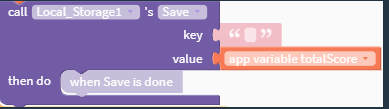
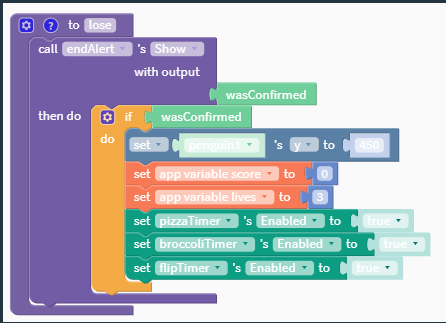
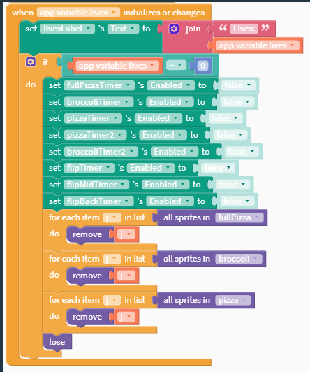

The purpose of this program is to play penguin pizza party.
The video shows the branding screen, playing the game, the total score that is saved, the restart function, running out of lives and restarting, and the how to play in the about section.
The slider is adjusted to move the penguin to collect pizza to gain points, buttons are clicked to navigate menus and run various functions such as restarting the game.
Local_Storage1
The data contained in the list represents the total number of points you have ever scored in the game.
Without using local storage it is impossible for the number of points the player has obtained to be saved after the app is closed.
 When called it shows a message asking if the player wants to play again, if they click the yes button it puts the penguin back into his starting place, the score and lives to their default values, and re-enables the correct timers to get the game running.
This procedure runs whenever a life is lost or gained to updated the lives counter and it checks if the lives are still above zero. If lives are zero it sets all timers to false, removes all sprites on screen, and runs the lose function.
Updates the lives counter to the correct number of lives remaining.
If the number of lives is now zero, turn off all timers and remove all sprites from the screen besides the penguin then if the player presses to play again turn on the correct timers, reset the lives and score to their default values, and move the penguin to his default position. If the lives are still above zero it updates the lives counter to the correct number of lives remaining.
Did the number of lives change and are they still above zero.
Did the number of lives change and are they still above zero.
Updates the lives counter to the correct number of lives remaining.
Updates the lives counter to the correct number of lives remaining or resets the game so the player can play again.